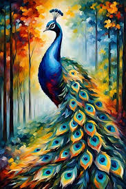
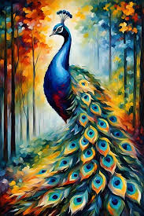
 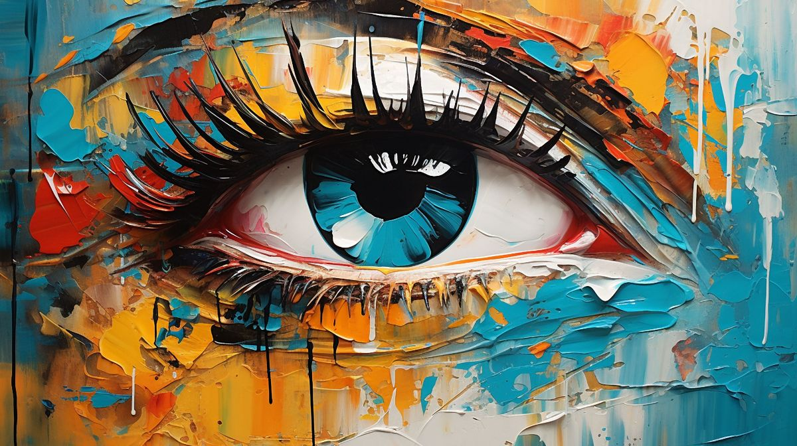
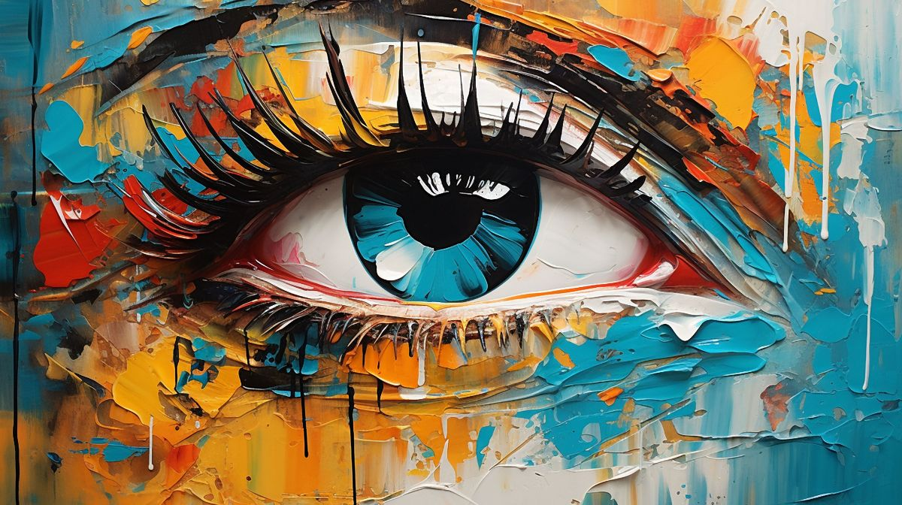
 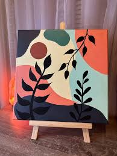
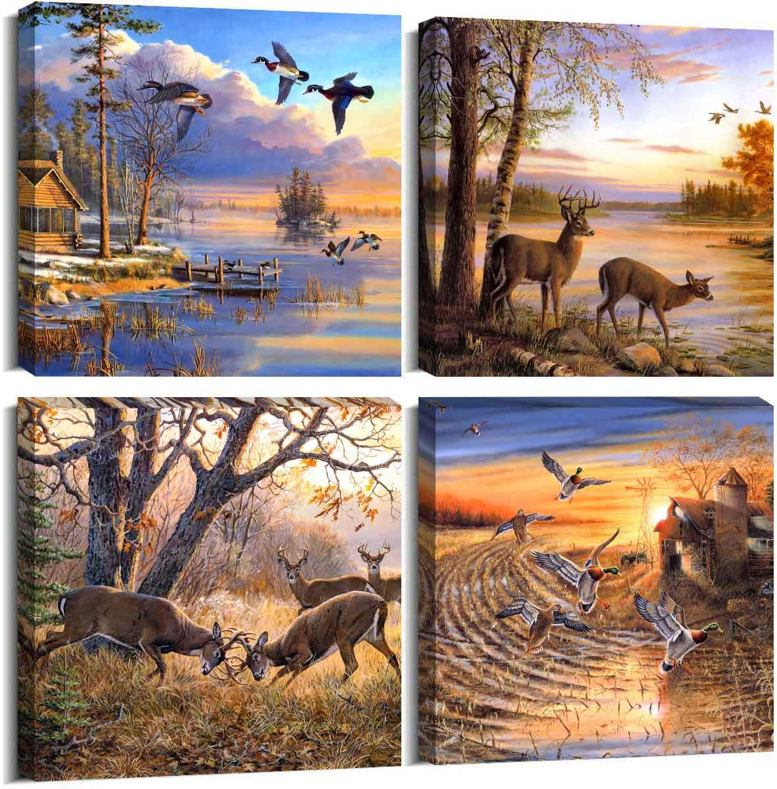
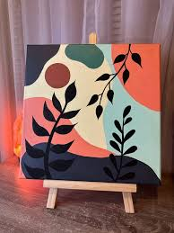
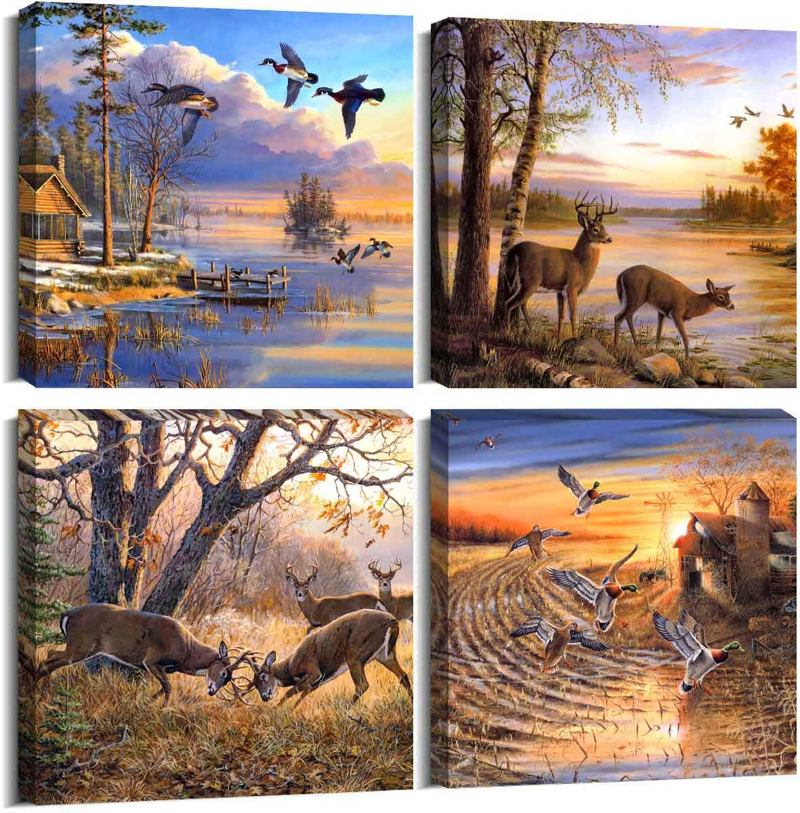
Immerse yourself in the vibrant world of artistic expression at Soulful strokes. Our collection features diverse creations that celebrate the human spirit and evoke emotions beyond words. Whether you're drawn to bold modernism or intricate traditional artistry, each piece invites you to see the world through a unique lens.
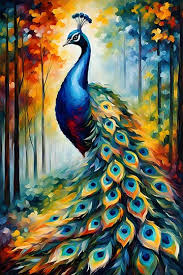
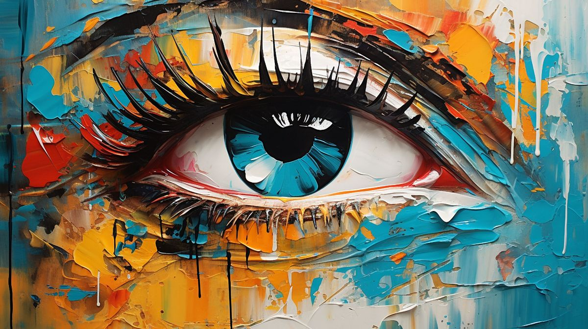
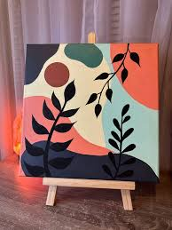
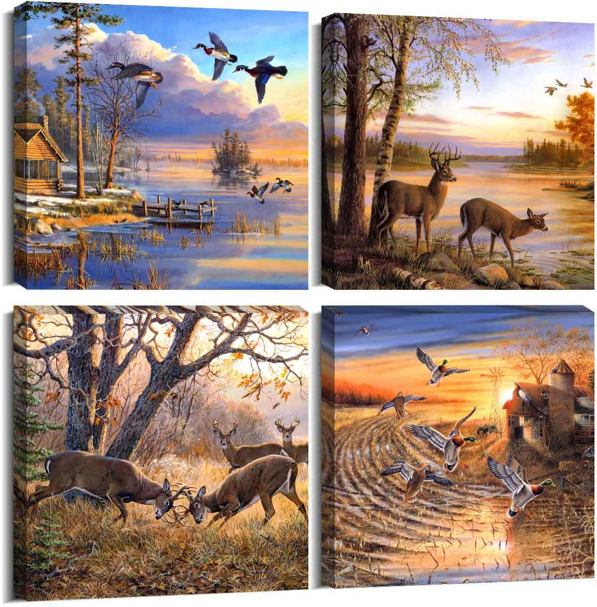